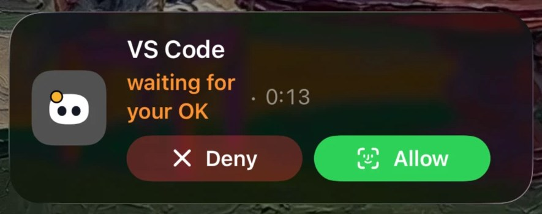

Now on iPhone
Step away from your Mac and Mochi follows you. The iPhone app goes as far into the Apple ecosystem as a dev tool can:

- Live Activity and Dynamic Island: lock your Mac while an agent works and Mochi moves to your Lock Screen. Allow or Deny a permission right from there.
- Notifications you can act on: Allow, Deny, pick an answer to Claude’s question, or reply to a finished agent.
- Face ID on every Allow: nothing runs on your Mac without your explicit tap.
- Talk to your agents: follow each session live, read the diffs, send the next instruction by text or voice.
- Widgets, Control Center, Siri, Shortcuts, Spotlight and Focus filters.
- Your services up close: GitHub, Vercel, Stripe, Cal.com, n8n, Notion and Resend, with safe actions like re-running CI or redeploying.
- Through your own iCloud: no Coucou server sees your projects, commands or keys.
Now on Android
Coucou for Android puts Mochi on your Android phone, linked to Coucou on your Windows or Linux computer over your Wi-Fi.


- Allow or Deny from your phone, even locked: a request wakes the screen; notifications show at most the tool and the program’s name, never the full command. Allow asks for your fingerprint or screen lock; Deny doesn’t.
- Your agents at a glance: Mochi shows who is working, plan usage and your services.
- Answers and chat: answer Claude Code’s questions and chat through your computer’s own AI keys, when you turn them on there.
- An island over other apps (optional), a widget, a quick-settings tile and a notification that keeps the link alive.
- Local and private: the phone talks straight to your computer on your Wi-Fi, paired with a QR code and a pinned certificate. The phone link is off by default.
- Free, no ads, no analytics.
Download the Android appHow to set it up
Private by design. No account, no analytics, no tracking. Your keys stay in your Keychain, Windows Credential Manager or the Linux Secret Service. Read the privacy policy.